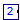
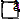
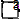
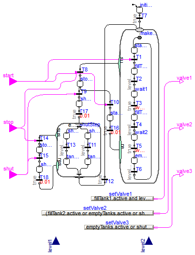
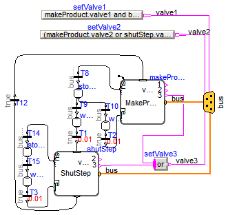

| Name | Description |
|---|---|
| PartialControlledTank | |
| TankController1 | Controller 1 for tank system (using expressions to control the valves) |
|  TankController2 | Controller 2 for tank system (using expressions to control the valves) |
|  MakeProduct | |
|  ShutStep | |
 Modelica_StateGraph2.Examples.Applications.ControlledTanks.Internal.PartialControlledTank
Modelica_StateGraph2.Examples.Applications.ControlledTanks.Internal.PartialControlledTank
partial model PartialControlledTank extends Modelica.Icons.Example; package Medium = Modelica.Media.Water.ConstantPropertyLiquidWater;Modelica.Fluid.Valves.ValveDiscrete valve1( redeclare package Medium = Medium, m_flow_nominal=40, dp_nominal=100000); Modelica.Fluid.Vessels.OpenTank tank1( level_start=0.05, redeclare package Medium = Medium, crossArea=6, height=4, nPorts=2, portsData={Modelica.Fluid.Vessels.BaseClasses.VesselPortsData( diameter=0.2, height=4, zeta_out=0, zeta_in=1),Modelica.Fluid.Vessels.BaseClasses.VesselPortsData( diameter=0.2, height=0, zeta_out=0, zeta_in=1)}, T_start=system.T_ambient, energyDynamics=Modelica.Fluid.Types.Dynamics.FixedInitial, massDynamics=Modelica.Fluid.Types.Dynamics.FixedInitial); Modelica.Fluid.Valves.ValveDiscrete valve2( redeclare package Medium = Medium, dp_nominal(displayUnit="Pa") = 1, m_flow_nominal=100); Modelica.Fluid.Valves.ValveDiscrete valve3( redeclare package Medium = Medium, dp_nominal(displayUnit="Pa") = 1, m_flow_nominal=10); Modelica.Fluid.Vessels.OpenTank tank2( level_start=0.05, redeclare package Medium = Medium, height=5, crossArea=6, nPorts=2, portsData={Modelica.Fluid.Vessels.BaseClasses.VesselPortsData( diameter=0.2, height=5, zeta_out=0, zeta_in=1),Modelica.Fluid.Vessels.BaseClasses.VesselPortsData( diameter=0.2, height=0, zeta_out=0, zeta_in=1)}, T_start=system.T_ambient, energyDynamics=Modelica.Fluid.Types.Dynamics.FixedInitial, massDynamics=Modelica.Fluid.Types.Dynamics.FixedInitial); Modelica.Fluid.Sources.Boundary_pT ambient( redeclare package Medium = Medium, nPorts=1, p=system.p_ambient, T=system.T_ambient); Modelica.Fluid.Sources.Boundary_pT reservoir( redeclare package Medium = Medium, nPorts=1, T=system.T_ambient, p=2500000); inner Modelica.Fluid.System system; equationconnect(reservoir.ports[1], valve1.port_a); connect(valve3.port_b, ambient.ports[1]); connect(tank2.ports[2],valve3. port_a); connect(valve2.port_b,tank2. ports[1]); connect(valve1.port_b,tank1. ports[1]); connect(tank1.ports[2],valve2. port_a); end PartialControlledTank;

| Type | Name | Default | Description |
|---|---|---|---|
| Height | limit1 | 0.98 | Maximum level of tank 1 [m] |
| Height | limit2 | 0.98 | Maximum level of tank 2 [m] |
| Height | minLevel | 0.01 | Minimum fill level of a tank [m] |
| Time | waitTime | 3 | Wait time to newly open a valve [s] |
| Type | Name | Description |
|---|---|---|
| input BooleanInput | start | |
| input BooleanInput | stop | |
| input BooleanInput | shut | |
| input RealInput | level1 | |
| input RealInput | level2 | |
| output BooleanOutput | valve1 | |
| output BooleanOutput | valve2 | |
| output BooleanOutput | valve3 |
model TankController1
"Controller 1 for tank system (using expressions to control the valves)"
extends Modelica.Blocks.Interfaces.BlockIcon;
parameter Modelica.SIunits.Height limit1(min=0) = 0.98
"Maximum level of tank 1";
parameter Modelica.SIunits.Height limit2(min=0) = 0.98
"Maximum level of tank 2";
parameter Modelica.SIunits.Height minLevel(min=0) = 0.01
"Minimum fill level of a tank";
parameter Modelica.SIunits.Time waitTime=3 "Wait time to newly open a valve";
Modelica.Blocks.Interfaces.BooleanInput start;
Modelica.Blocks.Interfaces.BooleanInput stop;
Modelica.Blocks.Interfaces.BooleanInput shut;
Modelica.Blocks.Interfaces.RealInput level1;
Modelica.Blocks.Interfaces.RealInput level2;
Modelica.Blocks.Interfaces.BooleanOutput valve1;
Modelica.Blocks.Interfaces.BooleanOutput valve2;
Modelica.Blocks.Interfaces.BooleanOutput valve3;
Modelica.Blocks.Sources.BooleanExpression setValve1(y=fillTank1.active
and level1 <= 1.01*limit1);
Modelica.Blocks.Sources.BooleanExpression setValve2(y=(fillTank2.active
or emptyTanks.active or shutTank1.active) and level2 <= 1.01*
limit2);
Modelica.Blocks.Sources.BooleanExpression setValve3(y=emptyTanks.active
or shutTank2.active);
Parallel makeProduct(
use_suspend=true,
nIn=2,
nEntry=1,
nExit=0,
nOut=0,
use_outPort=false,
use_inPort=true,
nSuspend=1,
nResume=1,
initialStep=false);
Modelica_StateGraph2.Step startStep(
nOut=1, nIn=2);
Modelica_StateGraph2.Transition T1(
use_conditionPort=true,
waitTime=0.01,
delayedTransition=false);
Modelica_StateGraph2.Step fillTank1(
nIn=1, nOut=1);
Modelica_StateGraph2.Transition T2(
condition=level1 > limit1);
Modelica_StateGraph2.Step wait1(
nIn=1, nOut=1);
Modelica_StateGraph2.Step fillTank2(
nIn=1, nOut=1);
Modelica_StateGraph2.Transition T3(
delayedTransition=true, waitTime=waitTime);
Modelica_StateGraph2.Transition T4(
condition=level1 < minLevel);
Modelica_StateGraph2.Step wait2(
nIn=1, nOut=1);
Modelica_StateGraph2.Transition T5(
delayedTransition=true, waitTime=waitTime);
Modelica_StateGraph2.Step emptyTanks(
nIn=1, nOut=1);
Modelica_StateGraph2.Transition T6(
condition=level2 < minLevel);
Modelica_StateGraph2.Step initialStep(
initialStep=true, nOut=1);
Modelica_StateGraph2.Transition T7;
Modelica_StateGraph2.Step stopStep1(
nIn=1, nOut=2);
Modelica_StateGraph2.Transition T8(
use_conditionPort=true);
Modelica_StateGraph2.Transition T9(
use_conditionPort=true, delayedTransition=false);
Modelica_StateGraph2.Transition T10(
use_conditionPort=true, delayedTransition=false);
Modelica_StateGraph2.Step shutTank1(
nIn=1, nOut=1);
Modelica_StateGraph2.Transition T13(
delayedTransition=false, condition=level1 < minLevel);
Parallel shutStep(
use_inPort=true,
use_outPort=true,
use_suspend=true,
nEntry=2,
nExit=2,
nOut=1,
nSuspend=1,
use_activePort=false,
initialStep=false,
nIn=1,
nResume=1);
Modelica_StateGraph2.Step shutTank2(
nIn=1, nOut=1);
Modelica_StateGraph2.Step tank1Empty(
nIn=1, nOut=1);
Modelica_StateGraph2.Step tank2Empty(
nIn=1, nOut=1);
Modelica_StateGraph2.Transition T11(
condition=level2 < minLevel, delayedTransition=false);
Modelica_StateGraph2.Transition T12(
delayedTransition=false);
Modelica_StateGraph2.Transition T14(
use_conditionPort=true, delayedTransition=false);
Modelica_StateGraph2.Step stopStep2(
nIn=1, nOut=1);
Modelica_StateGraph2.Transition T15(
use_conditionPort=true,
delayedTransition=false,
waitTime=0);
Modelica_StateGraph2.Step startWait(
nOut=1, nIn=1);
Modelica_StateGraph2.Transition T16(
delayedTransition=true,
waitTime=0.01,
use_conditionPort=false);
Modelica_StateGraph2.Step shutWait(
nOut=1, nIn=1);
Modelica_StateGraph2.Transition T17(
delayedTransition=true, waitTime=0.01);
Modelica_StateGraph2.Step shutWait2(
nOut=1, nIn=1);
Modelica_StateGraph2.Transition T18(
waitTime=0.01,
delayedTransition=true,
use_conditionPort=false);
equation
connect(start, T1.conditionPort);
connect(fillTank1.outPort[1], T2.inPort);
connect(T2.outPort, wait1.inPort[1]);
connect(wait1.outPort[1], T3.inPort);
connect(T3.outPort, fillTank2.inPort[1]);
connect(fillTank2.outPort[1], T4.inPort);
connect(T4.outPort, wait2.inPort[1]);
connect(wait2.outPort[1], T5.inPort);
connect(T5.outPort, emptyTanks.inPort[1]);
connect(emptyTanks.outPort[1], T6.inPort);
connect(T1.outPort, fillTank1.inPort[1]);
connect(startStep.inPort[1], makeProduct.entry[1]);
connect(startStep.outPort[1], T1.inPort);
connect(T6.outPort, startStep.inPort[2]);
connect(T7.outPort, makeProduct.inPort[1]);
connect(T8.outPort, stopStep1.inPort[1]);
connect(makeProduct.suspend[1], T8.inPort);
connect(stop, T8.conditionPort);
connect(initialStep.outPort[1], T7.inPort);
connect(stopStep1.outPort[1], T9.inPort);
connect(T10.inPort, stopStep1.outPort[2]);
connect(setValve1.y, valve1);
connect(setValve2.y, valve2);
connect(setValve3.y, valve3);
connect(start, T10.conditionPort);
connect(shutStep.entry[1], shutTank1.inPort[1]);
connect(shutStep.entry[2], shutTank2.inPort[1]);
connect(shutTank1.outPort[1], T13.inPort);
connect(T13.outPort, tank1Empty.inPort[1]);
connect(shutTank2.outPort[1], T11.inPort);
connect(T11.outPort, tank2Empty.inPort[1]);
connect(tank1Empty.outPort[1], shutStep.exit[1]);
connect(tank2Empty.outPort[1], shutStep.exit[2]);
connect(shutStep.outPort[1], T12.inPort);
connect(shutStep.suspend[1], T14.inPort);
connect(T14.outPort, stopStep2.inPort[1]);
connect(stopStep2.outPort[1], T15.inPort);
connect(T12.outPort, makeProduct.inPort[2]);
connect(shut, T9.conditionPort);
connect(stop, T14.conditionPort);
connect(shut, T15.conditionPort);
connect(startWait.outPort[1], T16.inPort);
connect(T16.outPort, makeProduct.resume[1]);
connect(T10.outPort, startWait.inPort[1]);
connect(T9.outPort, shutWait.inPort[1]);
connect(shutWait.outPort[1], T17.inPort);
connect(T17.outPort, shutStep.inPort[1]);
connect(T15.outPort, shutWait2.inPort[1]);
connect(shutWait2.outPort[1], T18.inPort);
connect(T18.outPort, shutStep.resume[1]);
end TankController1;

| Type | Name | Default | Description |
|---|---|---|---|
| Height | limit1 | 0.98 | Maximum level of tank 1 [m] |
| Height | limit2 | 0.98 | Maximum level of tank 2 [m] |
| Height | minLevel | 0.01 | Minimum fill level of a tank [m] |
| Time | waitTime | 3 | Wait time to newly open a valve [s] |
| Type | Name | Description |
|---|---|---|
| SignalBus | bus |
model TankController2
"Controller 2 for tank system (using expressions to control the valves)"
extends Modelica.Blocks.Interfaces.BlockIcon;
parameter Modelica.SIunits.Height limit1(min=0) = 0.98
"Maximum level of tank 1";
parameter Modelica.SIunits.Height limit2(min=0) = 0.98
"Maximum level of tank 2";
parameter Modelica.SIunits.Height minLevel(min=0) = 0.01
"Minimum fill level of a tank";
parameter Modelica.SIunits.Time waitTime=3 "Wait time to newly open a valve";
Modelica_StateGraph2.Step stopStep1(
nIn=1, nOut=2);
Modelica_StateGraph2.Transition T8( use_conditionPort=
false, condition=bus.stop);
Modelica_StateGraph2.Transition T9(
use_conditionPort=false,
condition=bus.shut,
delayedTransition=false,
waitTime=0);
Modelica_StateGraph2.Transition T10(
use_conditionPort=false,
condition=bus.start,
waitTime=0,
delayedTransition=false);
Modelica_StateGraph2.Transition T12(
delayedTransition=false);
Modelica_StateGraph2.Transition T14( delayedTransition=false,
use_conditionPort=false,
condition=bus.stop);
Modelica_StateGraph2.Step stopStep2(
nIn=1, nOut=1);
Modelica_StateGraph2.Transition T15(
use_conditionPort=false,
condition=bus.shut,
delayedTransition=false,
waitTime=0);
MakeProduct makeProduct(nIn=1,
nSuspend=1,
limit1=limit1,
limit2=limit2,
waitTime=waitTime,
initialStep=true,
minLevel=minLevel,
nResume=1);
ShutStep shutStep(
nSuspend=1,
nOut=1,
initialStep=false,
nIn=1,
nResume=1,
minLevel=minLevel);
SignalBus bus;
Modelica.Blocks.Sources.BooleanExpression setValve1(y=makeProduct.valve1
and bus.level1 <= 1.01*limit1);
Modelica.Blocks.Sources.BooleanExpression setValve2(y=(makeProduct.valve2
or shutStep.valve2) and bus.level2 <= 1.01*limit2);
Modelica_StateGraph2.Blocks.MathBoolean.Or setValve3( nu=2);
Modelica_StateGraph2.Step waitShut(
nIn=1, nOut=1);
Modelica_StateGraph2.Transition T1(
delayedTransition=true, waitTime=0.01);
Modelica_StateGraph2.Step waitStop(
nIn=1, nOut=1);
Modelica_StateGraph2.Transition T2(
delayedTransition=true, waitTime=0.01);
Modelica_StateGraph2.Step waitShut2(
nIn=1, nOut=1);
Modelica_StateGraph2.Transition T3(
delayedTransition=true, waitTime=0.01);
equation
connect(T8.outPort, stopStep1.inPort[1]);
connect(stopStep1.outPort[1], T9.inPort);
connect(T10.inPort, stopStep1.outPort[2]);
connect(T14.outPort, stopStep2.inPort[1]);
connect(stopStep2.outPort[1], T15.inPort);
connect(makeProduct.suspend[1], T8.inPort);
connect(shutStep.suspend[1], T14.inPort);
connect(shutStep.outPort[1], T12.inPort);
connect(T12.outPort, makeProduct.inPort[1]);
connect(T9.outPort, waitShut.inPort[1]);
connect(waitShut.outPort[1], T1.inPort);
connect(T1.outPort, shutStep.inPort[1]);
connect(T10.outPort, waitStop.inPort[1]);
connect(waitStop.outPort[1], T2.inPort);
connect(T2.outPort, makeProduct.resume[1]);
connect(T15.outPort, waitShut2.inPort[1]);
connect(waitShut2.outPort[1], T3.inPort);
connect(T3.outPort, shutStep.resume[1]);
connect(makeProduct.valve3, setValve3.u[1]);
connect(shutStep.valve3, setValve3.u[2]);
connect(setValve3.y, bus.valve3);
connect(setValve1.y, bus.valve1);
connect(setValve2.y, bus.valve2);
connect(shutStep.bus, bus);
connect(makeProduct.bus, bus);
end TankController2;
| Type | Name | Default | Description |
|---|---|---|---|
| Boolean | initialStep | false | =true, if initial step (start state machine at entry ports of Parallel) |
| Boolean | use_inPort | true | =true, if inPort enabled |
| Boolean | use_outPort | false | =true, if outPort enabled |
| Boolean | use_suspend | true | =true, if suspend and resume ports enabled |
| Boolean | use_activePort | false | =true, if activePort enabled |
| Height | limit1 | 0.98 | Maximum level of tank 1 [m] |
| Height | limit2 | 0.98 | Maximum level of tank 2 [m] |
| Height | minLevel | 0.01 | Minimum fill level of a tank [m] |
| Time | waitTime | 3 | Wait time to newly open a valve [s] |
| Type | Name | Description |
|---|---|---|
| Step_in | inPort[nIn] | If enabled, port for one or more input transitions |
| Step_out | outPort[nOut] | If enabled, port for one or more output transitions |
| Composite_resume | resume[nResume] | If enabled, port for zero, one or more resume transitions |
| Composite_suspend | suspend[nSuspend] | If enabled, port for zero, one or more suspend transitions |
| output BooleanOutput | activePort | = true if Parallel component is active, otherwise it is not active |
| SignalBus | bus | |
| output BooleanOutput | valve1 | Value of Boolean output |
| output BooleanOutput | valve2 | Value of Boolean output |
| output BooleanOutput | valve3 | Value of Boolean output |
model MakeProduct
extends Modelica_StateGraph2.PartialParallel(
final use_inPort=true, final use_suspend=true,
final use_activePort = false,
final use_outPort = false,
nEntry=1,nExit=1);
parameter Modelica.SIunits.Height limit1(min=0) = 0.98
"Maximum level of tank 1";
parameter Modelica.SIunits.Height limit2(min=0) = 0.98
"Maximum level of tank 2";
parameter Modelica.SIunits.Height minLevel(min=0) = 0.01
"Minimum fill level of a tank";
parameter Modelica.SIunits.Time waitTime=3 "Wait time to newly open a valve";
SignalBus bus;
Modelica_StateGraph2.Step startStep(
nOut=1, nIn=2);
Modelica_StateGraph2.Transition T1(
waitTime=0.01,
delayedTransition=false,
use_conditionPort=false,
condition=bus.start);
Modelica_StateGraph2.Step fillTank1(
nIn=1, nOut=1,
use_activePort=true);
Modelica_StateGraph2.Transition T2( condition=bus.level1
> limit1);
Modelica_StateGraph2.Step wait1(
nIn=1, nOut=1);
Modelica_StateGraph2.Step fillTank2(
nIn=1, nOut=1,
use_activePort=true);
Modelica_StateGraph2.Transition T3(
delayedTransition=true, waitTime=waitTime);
Modelica_StateGraph2.Transition T4( condition=bus.level1
< minLevel);
Modelica_StateGraph2.Step wait2(
nIn=1, nOut=1);
Modelica_StateGraph2.Transition T5(
delayedTransition=true, waitTime=waitTime);
Modelica_StateGraph2.Step emptyTanks(
nIn=1, nOut=1,
use_activePort=true);
Modelica_StateGraph2.Transition T6( condition=bus.level2
< minLevel);
Modelica.Blocks.Interfaces.BooleanOutput valve1 "Value of Boolean output";
Modelica.Blocks.Interfaces.BooleanOutput valve2 "Value of Boolean output";
Modelica.Blocks.Interfaces.BooleanOutput valve3 "Value of Boolean output";
Modelica_StateGraph2.Blocks.MathBoolean.Or or1(
nu=2);
equation
connect(fillTank1.outPort[1],T2. inPort);
connect(T2.outPort,wait1. inPort[1]);
connect(wait1.outPort[1],T3. inPort);
connect(T3.outPort,fillTank2. inPort[1]);
connect(fillTank2.outPort[1],T4. inPort);
connect(T4.outPort,wait2. inPort[1]);
connect(wait2.outPort[1],T5. inPort);
connect(T5.outPort,emptyTanks. inPort[1]);
connect(emptyTanks.outPort[1],T6. inPort);
connect(T1.outPort,fillTank1. inPort[1]);
connect(startStep.outPort[1],T1. inPort);
connect(T6.outPort,startStep.inPort[2]);
connect(entry[1], startStep.inPort[1]);
connect(fillTank1.activePort, valve1);
connect(emptyTanks.activePort, valve3);
connect(or1.y, valve2);
connect(fillTank2.activePort, or1.u[1]);
connect(emptyTanks.activePort, or1.u[2]);
end MakeProduct;
| Type | Name | Default | Description |
|---|---|---|---|
| Boolean | initialStep | false | =true, if initial step (start state machine at entry ports of Parallel) |
| Boolean | use_inPort | true | =true, if inPort enabled |
| Boolean | use_outPort | true | =true, if outPort enabled |
| Boolean | use_suspend | true | =true, if suspend and resume ports enabled |
| Boolean | use_activePort | false | =true, if activePort enabled |
| Height | minLevel | 0.01 | Minimum fill level of a tank [m] |
| Type | Name | Description |
|---|---|---|
| Step_in | inPort[nIn] | If enabled, port for one or more input transitions |
| Step_out | outPort[nOut] | If enabled, port for one or more output transitions |
| Composite_resume | resume[nResume] | If enabled, port for zero, one or more resume transitions |
| Composite_suspend | suspend[nSuspend] | If enabled, port for zero, one or more suspend transitions |
| output BooleanOutput | activePort | = true if Parallel component is active, otherwise it is not active |
| SignalBus | bus | |
| output BooleanOutput | valve2 | Value of Boolean output |
| output BooleanOutput | valve3 | Value of Boolean output |
model ShutStep
extends Modelica_StateGraph2.PartialParallel(
final use_suspend=true,
final use_activePort = false,
final use_inPort = true,
final use_outPort = true,
final nEntry=2, final nExit=2);
parameter Modelica.SIunits.Height minLevel(min=0) = 0.01
"Minimum fill level of a tank";
SignalBus bus;
Modelica_StateGraph2.Step shutTank1(
nIn=1, nOut=1,
use_activePort=true);
Modelica_StateGraph2.Transition T13(
delayedTransition=false, condition=bus.level1 < minLevel);
Modelica_StateGraph2.Step shutTank2(
nIn=1, nOut=1,
initialStep=false,
use_activePort=true);
Modelica_StateGraph2.Step tank1Empty(
nIn=1, nOut=1);
Modelica_StateGraph2.Step tank2Empty(
nIn=1, nOut=1);
Modelica_StateGraph2.Transition T11( delayedTransition=false, condition=
bus.level2 < minLevel);
Modelica.Blocks.Interfaces.BooleanOutput valve2 "Value of Boolean output";
Modelica.Blocks.Interfaces.BooleanOutput valve3 "Value of Boolean output";
equation
connect(shutTank1.outPort[1],T13. inPort);
connect(T13.outPort,tank1Empty.inPort[1]);
connect(shutTank2.outPort[1],T11.inPort);
connect(T11.outPort,tank2Empty.inPort[1]);
connect(shutTank1.inPort[1], entry[1]);
connect(shutTank2.inPort[1], entry[2]);
connect(tank1Empty.outPort[1], exit[1]);
connect(tank2Empty.outPort[1], exit[2]);
connect(shutTank1.activePort, valve2);
connect(shutTank2.activePort, valve3);
end ShutStep;
 Modelica_StateGraph2.Examples.Applications.ControlledTanks.Internal.SignalBus
Modelica_StateGraph2.Examples.Applications.ControlledTanks.Internal.SignalBus
| Type | Name | Description |
|---|---|---|
| Boolean | valve1 | |
| Boolean | valve2 | |
| Boolean | valve3 | |
| Boolean | start | |
| Boolean | stop | |
| Boolean | shut | |
| Length | level1 | [m] |
| Length | level2 | [m] |
expandable connector SignalBus extends Modelica.Icons.SignalBus; Boolean valve1; Boolean valve2; Boolean valve3; Boolean start; Boolean stop; Boolean shut; Modelica.SIunits.Length level1; Modelica.SIunits.Length level2;end SignalBus;